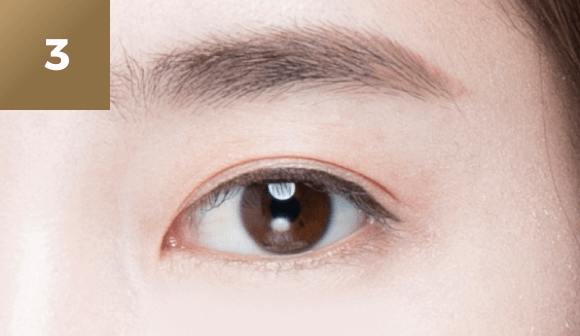
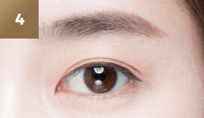

시원하고
자연스러운
#눈밑 지방
재배치
-

수술 시간
1시간
-

마취방법
수면/국소마취
-

실밥제거
4~5일후
-

내원치료
1~2회
-

회복기간
개인차 있음
눈밑 성형이란?
눈밑의 주름이 처지고 눈밑 지방이 늘어져
나이들어 보이고 피곤한 인상을 지방제거
또는 처진 피부를 리프팅해주어 젋고
생생한 눈매를 만들어 줍니다.


눈밑 지방
솔루션눈밑 지방제거
나이가 들어갈 수록 늘어지는 눈밑 지방을
눈 안쪽 결막을 통해 비교적 간단하게
제거하는 수술방법으로 피곤해 보이는
인상을 건강하고 어려보이는 인상으로
만들어 줍니다.
-

정밀 진단 후 모양을 디자인합니다.
-
눈 안쪽 결막을 통하여 불필요한
지방을 제거합니다. -

젊어 보이고 건강한 눈을 완성합니다.
눈 밑 지방
솔루션
눈 밑 지방 재배치
피부 절개를 하지 않고 결막절개만을 통해
기존의 과도한 지방을 평평하게 재배치 한 후
눈의 버팀목 역할을 하는 근막초로 이용해
지방을 단단하게 고정하면 생기있고
활력있는 인상을 얻을 수 있습니다.
-
정밀 진단 후 모양을 디자인합니다.
-
피부 절개 없이 눈 안쪽 결막으로
수술을 진행합니다. -
지방 재배치하여 교정해줍니다.
-
젊어보이고 건강한 눈을 완성합니다.
눈 밑 지방
솔루션
하안검 성형
안쪽 결막을 통해 근막초 고정 지방재배치를
한 후 겉에 약간의 늘어진 피부를 살짝
제거하여 건강하고 어려 보이는 인상을
만들 수 있습니다.
-

정밀 진단 후 모양을 디자인합니다.
-

안쪽 결막을 통해 근막초 고정
지방재배치를 합니다. -
약간의 늘어진 피부를 살짝 제거합니다.
-

젊어보이고 건강한 눈을 완성합니다.
눈밑지방 재배치
노하우
이은정 원장의 눈밑 지방 재배치 노하우
-
KNOWHOW
-
01
돌출된 눈밑 지방을 원래 위치인
안구 아래쪽으로 재배치 후
근막초고정 -
02
다크서클 개선과 안티에이징
효과를 동시에 볼 수 있음
-
03
피부 추가 처짐 예방과 오랜기간
수술 효과 유지